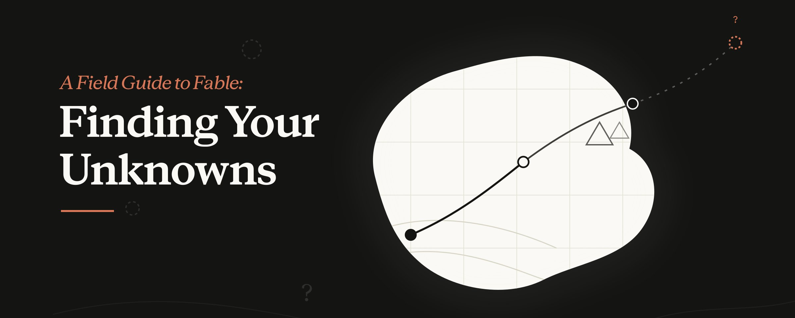
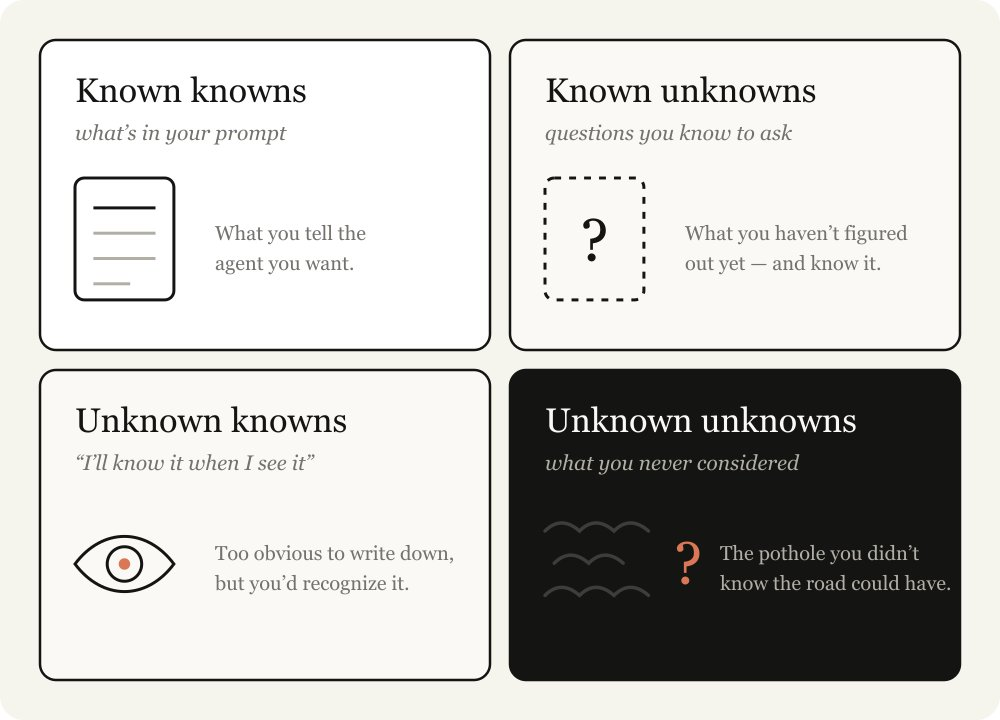
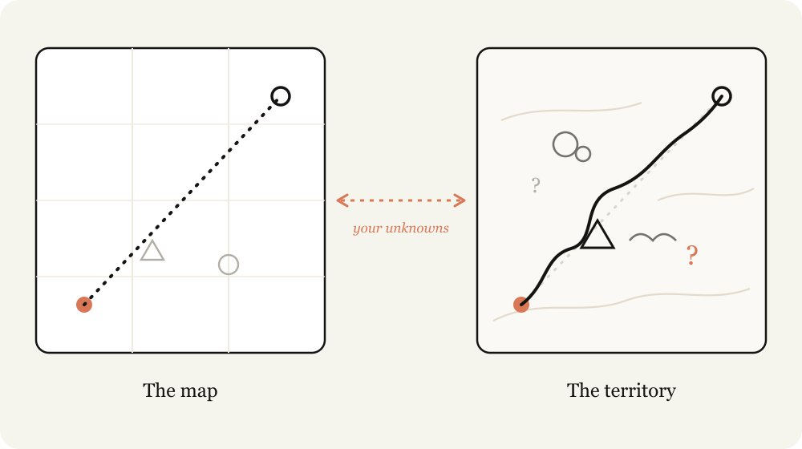

A Field Guide to Fable
寻找你的未知 · Claude Code 工程师 Thariq 的 8 个实战技巧
Thariq 在 Claude Code 团队做的一个核心论断:Fable 5 的工作质量被「澄清 unknowns 的能力」卡住。本文翻译 + 拆解他在 pre / during / post 三个阶段的 8 个技巧,11 个示例 prompts 全部双语,可直接复制使用。

原文封面 · A Field Guide to Fable · Thariq (@trq212) · 2026/07/03
用 Claude Fable 5 一直在重学一条古老的教训:图不是领地。
图(work 的规划)就是我给 Claude 的 prompts、skills、context。 领地(work 必须真正发生的地方)就是 codebase、真实世界、它的实际约束。

原文配图 · Map 与 Territory — Claude 工作的 unknown 来源 · Thariq (@trq212) · 2026/07/03
图和领地的差距就是我说的 unknowns。Claude 撞到 unknown 的时候,它就要凭「它猜我想怎样」去拍板。 做的工作越多,Claude 可能撞上的 unknowns 越多。
Fable 是我遇到的第一个模型,工作质量被我「能否澄清 unknowns」的能力卡住上限。
重要的是,只往前规划不一定够。你可能在实现深处才发现 unknowns,也可能你的 unknowns 会指出「你其实应该用完全不同的方式解这道题」。
我跟 Fable 工作是个反复的过程 —— 在实现前、实现中、实现后去发现我的 unknowns。
我做过一些找 unknowns 的示例 artifact 放在 [linked](参考),但记得回头来建立直觉 —— 该在什么时候用哪种技巧。
Knowing your unknowns
你的 unknowns 是什么?我带着一个问题去找 Claude 时,会从 4 个维度拆开:
- Known Knowns: This is essentially what is in my prompt. What do I tell the agent that I want?
- Known Unknowns: What haven't I figured out yet, but I’m aware that I haven’t?
- Unknown Knowns: What's so obvious I’d never write it down, but would recognize it if I saw it?
- Unknown Unknowns: What haven't I considered at all? What knowledge am I not aware of? Do I know how good something can be?

原文配图 · 4 种 unknowns · 找盲区的来源 · Thariq (@trq212) · 2026/07/03
最厉害的 agentic 程序员是那种 unknowns 比较少的人。看 Boris 或 Jarred prompt 我就知道,他们对自己想要什么在细节层面都非常清楚 —— 他们和 codebase、模型行为都在 deep sync。
但他们也会预设有 unknowns。在某种意义上,「减少和规划好你的 unknowns」就是 agentic coding 的真功夫。还好这是可以练出来的 —— 用 Claude 一起做就能练。
Help Claude help you

原文配图 · Instructing Claude · 特异性 vs 模糊性的平衡 · Thariq (@trq212) · 2026/07/03
指挥 Claude 是个很精妙的平衡。说太具体,Claude 会死跟你的指令走,哪怕更应该 pivot。说太模糊,Claude 就会按行业最佳实践的常规去选 —— 可能根本不适合你这道题。
如果你不把 unknowns 算进来,两边都会失败。你不知道路上哪里有坑、哪里是坦途,但你还是希望 Claude 能转弯。
Claude 能帮你更快发现 unknowns。它能极快地翻你的 codebase 和互联网,也比你在大多数话题上懂得更多。它也能更快地从失败里迭代。
这个过程最重要的是:告诉 Claude 你的起点。比如,告诉它你在思考的哪一步;把你对这个问题的经验、对 codebase 的经验披露出来;让它跟你像 thought partner 那样一起做。
我之前写过用 HTML 跟 Claude 工作 —— 这种情况下,HTML artifact 几乎都是最好的可视化和表达方式。
下面这篇文章会展开我用的一些 pattern,来找出这些 unknowns。我不会每次都全用,但作为一组可用的技巧值得备着。

原文配图 · Patterns in this article · 8 技巧全景 · Thariq (@trq212) · 2026/07/03
# Pre-implementation
Blind Spot Pass
开始一项工作时,你能做的最有价值的事之一就是理解自己的盲区。比如,你要在 codebase 一个新部分写 feature,或者让 Claude 帮你做你不熟的事(比如迭代一版设计) —— 你很可能会有一堆 unknown unknowns。
你可能不知道该问什么问题、不知道什么是「好」、不知道历史上做过什么、也不知道有什么坑要避。
要破这个局,你可以让 Claude 帮你找你的 unknown unknowns 再讲给你听。我喜欢直接用「blindspot pass」和「unknown unknowns」这两个原话。把你是谁、你知道什么 context 也给它通常很重要:
Brainstorms and prototypes
我做事的时候,经常会带一堆 unknown knowns —— 只有亲眼看到才能说清楚的判断标准。这种时候我喜欢让 Claude 跟我一起 brainstorm 和做 prototype。
在 prototype 阶段尽早把 unknown knowns 抓出来、说出来,价值很大 —— 因为到实现时才发现,代价相对会很高。feature 或 spec 里的微小改动会引起实现侧的剧烈差异,而你的 agent 也更难回滚以前的改动。
比如,你可能只是想看看一个按钮加到 frame 上是啥样子 —— 不用接后端路由,也不用在前端维护新状态。
视觉设计对我来说是个很难说清但看到就知道的事。这种情况下,我会让它对一个 artifact 给几个不同的设计方向。
我几乎每次写代码的开头都先跑一次探索或 brainstorm 阶段。这帮我带着 intent 出发,定义项目的 scope。Claude 经常能发现我自己可能漏掉的高价值路径,有时候也会一叶障目不见泰山。Brainstorm 能防止我设的 scope 太窄或太宽。
Interviews
我做完一轮 brainstorm,大概率还有 unknowns 没消。
这种时候,我会让 Claude 来 interview 我,把所有 unknowns / 含糊的地方问出来。让 Claude interview 你时,尽量把问题的 context 给它,引导它去问对问题。举几个例子:
References
有时候你没办法详细描述你想啥。比如,你可能没有对应语言去描述,或者事情太复杂,描述起来要花很久。
这种情况下,最好的答案是 reference。哪怕你可以拿 diagrams、文档、图,最佳 reference 还是源代码。
如果你有个库正好按你想要的方式实现了某件事,或者你很喜欢某个设计组件,直接指给 Fable 看那个文件夹,告诉它找什么 —— 哪怕语言不同也无所谓。
这也是 Claude Design 的工作方式。你不用手头准备好一个文件(尽管也可以)。你可以指向一个你喜欢网站上的 module,它会读到底层代码,而不只是截图。这样对 markup、结构、组件真实怎么搭起来都更详尽。
Implementation Plans
等我自觉得准备好开工,我倾向于让 Claude 给我整理一份 implementation plan,让我来 review。plan 聚焦在最可能改动的部分 —— 比如 review 数据模型、type interface、UX flow。这样能让 Claude 提前把我可能要改的地方挑出来。
During implementation
Implementation notes
我对 plan 满意之后,我开新 session,把任何 artifact 都接到 prompt 里。比如我可能会把 spec 和 prototype 都接进去,让 agent 去实现。
但真相是:不管你事前做了多少规划,implementation 时总有 unknown unknowns 埋伏着。agent 可能因为代码里撞到的 edge case,而不得不换条路。
我会让 Claude Code 维护一份临时的 `implementation-notes.md`(或 .html)文件,把它做过的决策记下来,这样我们下次就能从中学到东西。
Post implementation
Pitches and explainers

原文配图 · Pitches and explainers · 拿到 buy-in 的关键 · Thariq (@trq212) · 2026/07/03
发货里最重要的一步之一是争取 buy-in 和批准。
- Accelerate understanding when reviewers start with the same unknowns you did
- Accelerate approvals when experts want to see you accounted for the unknowns and common failure points they would have anticipated
Quizzes
一个长 session 之后,Claude 可能完成的事比我以为的要多。读 code diff 只能让我对发生了什么有个浅理解,因为很多行为会依赖已经存在的 code path。
给 Claude 一堆 context,让它 quiz 我,能让我真搞清楚发生了什么。我合并之前必须通过那份 quiz。
How this comes together: launching Fable
Fable 的发布视频全程是 Claude Code 剪的。这对我来说是个完全陌生的领域,我远说不上是专家。
我从已知的开始。我了解 Claude 能用代码剪视频、做转写,但我不确定它够不够准。我让 Claude 给我讲一下 Whisper 这类转写是怎么工作的,我能不能用 ffmpeg 精准剪掉“嗯”或长停顿。
我希望 Claude 能做一个跟我的讲话节奏同步的 UI,但不确定它做不做得来,所以我让它用 Remotion + 转写一起做个 prototype 视频,先验证一下可行性。
最后,视频看起来有点暗,我心里知道这是 color grading 的锅,但我其实不懂 color grading。我想让 Claude 一次给我出几个变种让我挑,但我意识到,我连 color grading「好」长啥样都不知道。所以反过来,我让 Claude 教我 color grading 的未知,帮我发现 unknowns。
You can watch a more in-depth explanation on that here.
Matching the Map and Territory
模型越强,你用对方法能做到的就越多。如果一个长 horizon 任务被搞砸了,大概率是你需要花更多时间定义你的 unknowns,或者写一份允许 Claude 在 unknowns 里自由发挥的 implementation plan。
每一次 explainer、brainstorm、interview、prototype、reference,都是一种便宜的方式 —— 在它变得贵起来之前,知道原来自己不知道什么。
所以,下一次要开新项目时,让 Claude 帮你找 unknowns。
SOURCES & CREDITS
引用与原文出处
-
ORIGINAL ARTICLE
A Field Guide to Fable: Finding Your Unknowns
作者:Thariq (@trq212) · Claude Code @ Anthropic · 发布于 2026/07/03 · 3.3M 浏览
原文推文链接:https://x.com/trq212/status/2073100352921215386
原文文章链接:https://x.com/i/article/2073090223194755072 - AUTHOR · X https://x.com/trq212
- INTERPRETATION 本文为解读版本,按中文阅读习惯意译。原文中所有 11 个 example prompt 均保留英文原貌,便于直接复制使用;中文版为意译。如需引用请以原文为准。
So start your next project by asking Claude to help you find your unknowns.
— Thariq · on Claude Fable 5 and the map vs the territory